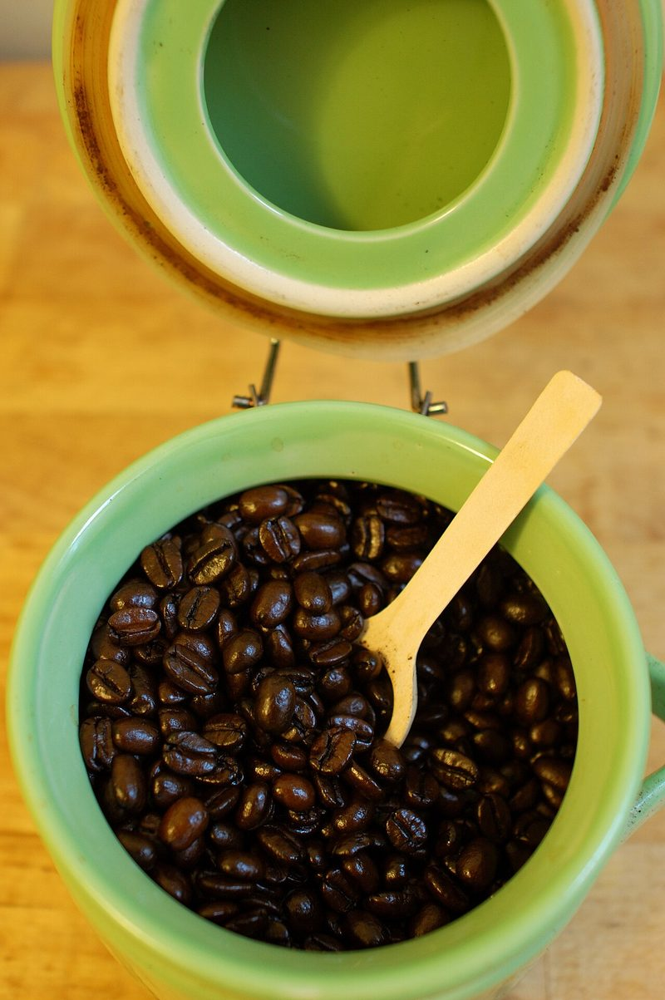
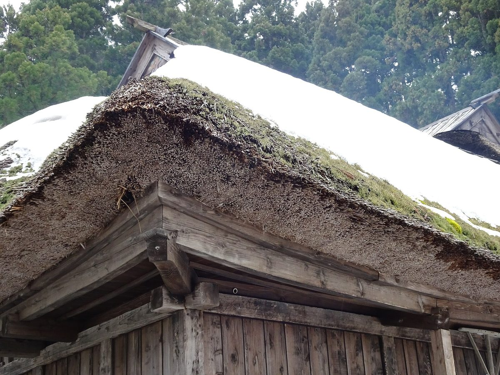
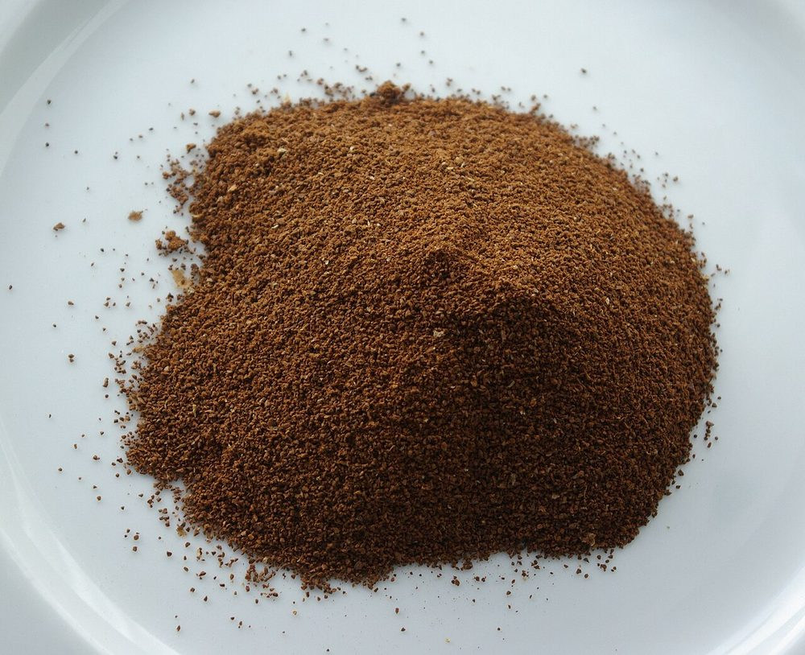

お店について
| 店名 | 和田珈琲＋ |
|---|---|
| 種別 | カフェ |
| 所在地 | 青森県十和田市元町西2-5-2 |
| 電話 | 0176-51-5434 |
| @wadacoffee_plus |
「雪と紅葉のあいだの一杯」について
このページ全体の「雪と紅葉のあいだの一杯」という切り口は、試作ページを作る側が考えた案です。お店の理念や由来ではありません。
写真は雪と秋の景色のイメージで、他地域で撮影されたものを含みます。お店や十和田の実際の風景ではありません。
準備中の項目
- お店のこだわり準備中(お問い合わせください)
- 店主・スタッフ準備中(お問い合わせください)
- 営業時間準備中(お問い合わせください)
- 席数準備中(お問い合わせください)
- 創業準備中(お問い合わせください)


